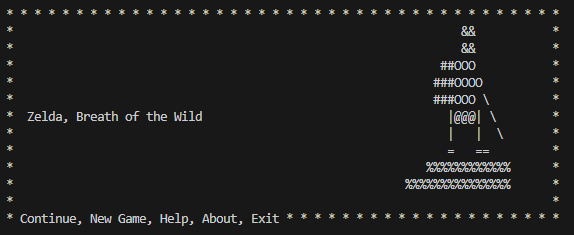
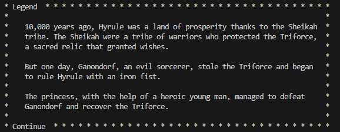
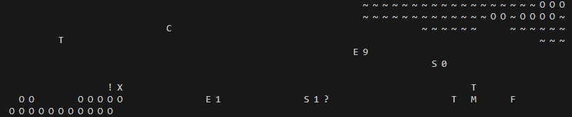

¡Bienvenido al Juego de Zelda!
Bienvenido a la página principal de el videojuego en solitario The Link Of Zelda creado por el equipo 3 en el entorno de Python. Aquí podrás encontrar información sobre diversos personajes de nuestro juego, un tutorial, por si necesitas ayuda y más información sobre nosotros.
Leyenda
Hace 10,000 años, Hyrule era una tierra de prosperidad gracias a los Sheikah. Los Sheikah eran una tribu de guerreros que protegían la Trifuerza, un relicario sagrado que concedía deseos. Pero un día, Ganondorf, un malvado hechicero, robó la Trifuerza y comenzó a gobernar Hyrule con mano de hierro. La princesa, con la ayuda de un joven héroe, logró derrotar a Ganondorf y recuperar la Trifuerza.
Trama
Ahora la historia se repite, y la Princesa Zelda ha sido capturada por Ganon. Él ha tomado el control de los Guardianes y ha llenado Hyrule de monstruos. Pero un joven llamado 'Link' acaba de despertar y debe recuperar a los Guardianes para derrotar a Ganon y salvar Hyrule.
Descargas
Encontraras el juego en el siguiente enlace https://github.com/AAyoubelbakhti/Zelda/releases